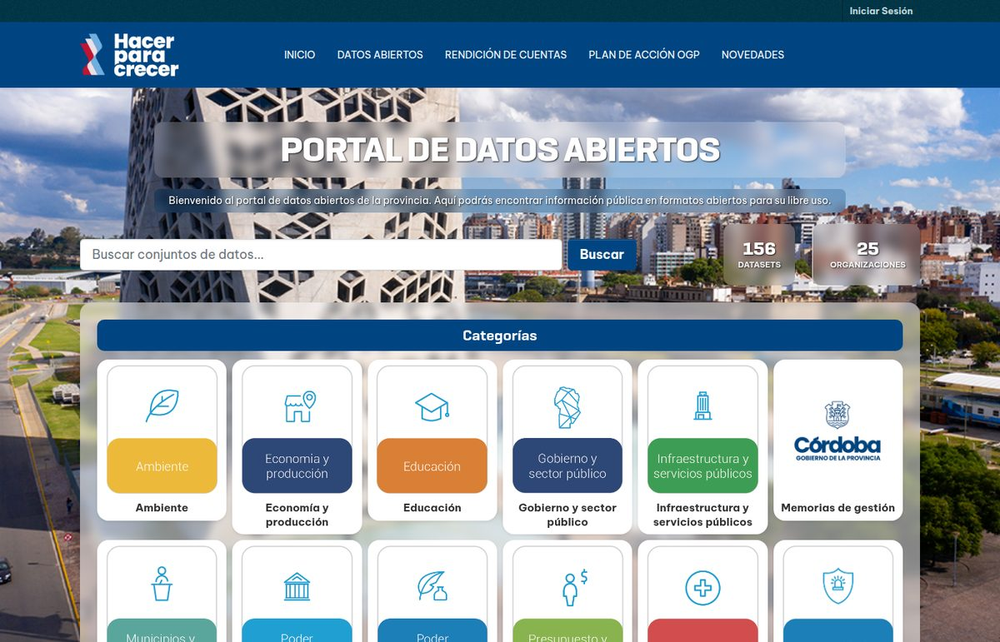
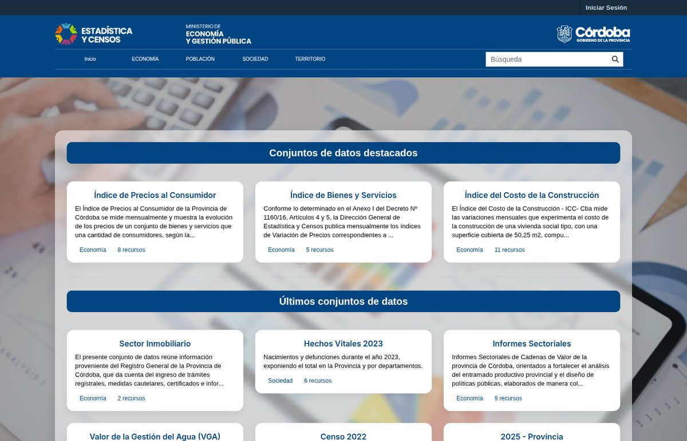
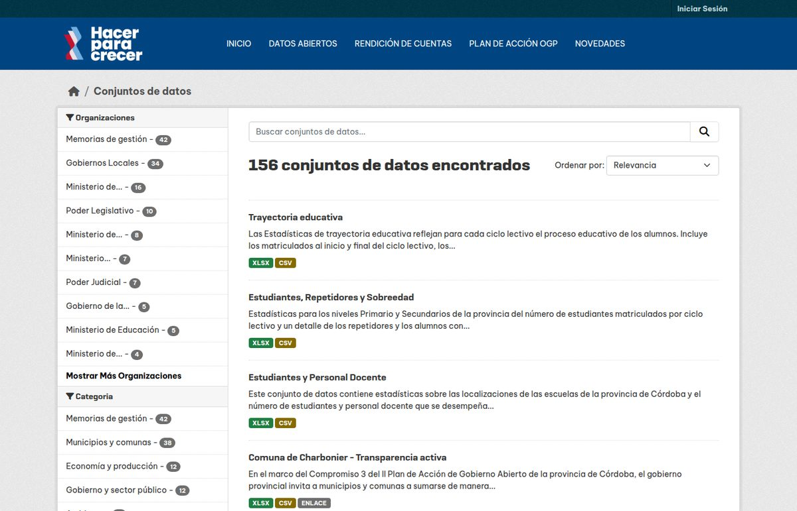

Migrar dos portales de datos abiertos después de una década sin actualizar
Terminamos la migración de los dos portales de datos abiertos de la Provincia de Córdoba: datosgestionabierta.cba.gov.ar y datosestadistica.cba.gov.ar. Fue un año de trabajo, desde agosto de 2025 hasta agosto de 2026. Lo cuento porque es el tipo de proyecto que casi nunca se cuenta: no hay nada nuevo para inaugurar, hay algo viejo que dejó de ser un riesgo.

El punto de partida
Los dos portales corrían sobre CKAN 2.6.2 con PostgreSQL 9.6, en servidores propios del gobierno. Esa versión de CKAN es de 2017. Nadie la había actualizado en casi diez años. Funcionaban pero cada día que pasaba la brecha con el CKAN actual se hacía más grande y el salto más caro.
Los que trabajamos con CKAN sabemos que una actualización de 2.6 a 2.11 no es una actualización menor. Cambió Python (de 2 a 3), cambió el framework web (de Pylons a Flask), cambió el esquema de la base y cambió la forma de escribir extensiones. Lo que había que hacer era construir portales nuevos y mover los datos.
Dos herramientas libres
Decidimos que todo lo que no fuera específico de Córdoba quedara publicado. Salieron dos repositorios:
ckan-to-aws despliega CKAN completo en AWS con Terraform y Docker: una tarea de ECS Fargate con CKAN, Solr y Redis, una base RDS PostgreSQL, imágenes en ECR, secretos en Secrets Manager y logs en CloudWatch. Un script, un .env y ya tenemos un CKAN andando.
ckan-migrator hace la migración a nivel base de datos. Levanta el dump viejo en un PostgreSQL 9.6 dockerizado, extrae cada tabla a CSV y JSON, y las inserta en el CKAN nuevo respetando el esquema actual. Datasets, recursos, organizaciones, grupos, usuarios y el historial de actividad. Los archivos subidos se mueven aparte.
Lo que sí es específico de Córdoba quedó en repositorios privados, uno por portal: una extensión para la interfaz de cada uno (los dos portales pertenecen a ministerios distintos y tienen identidad propia) y la configuración de cada ambiente. Cada equipo del gobierno tiene su repo y puede gestionar sus diferencias sin tocar la base común.


Lo que queda
Todo el proceso fue documentado exaustivamente para que cualquier equipo técnico pueda actualizar CKAN en el futuro sin depender de un proveedor externo. La migración de datos es reproducible y los portales pueden ser desplegados en cualquier nube o servidor propio.
Comentarios
Comments powered by Disqus